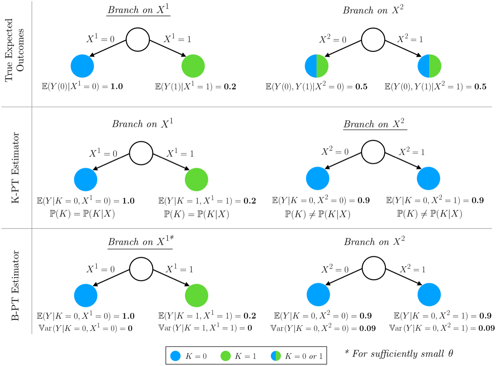
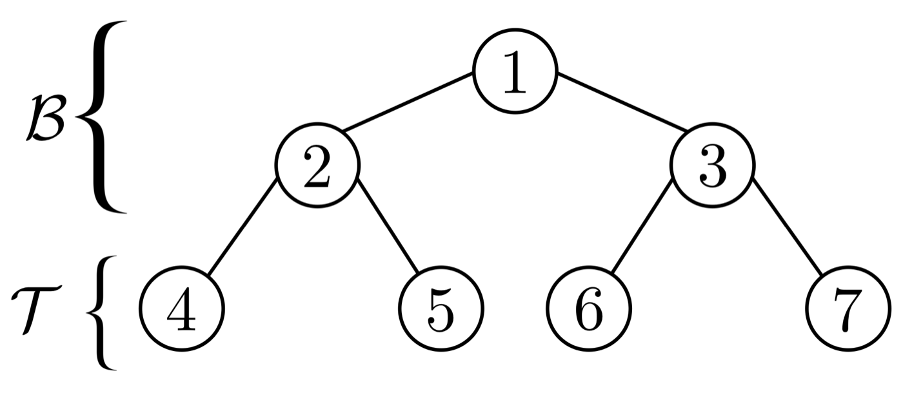
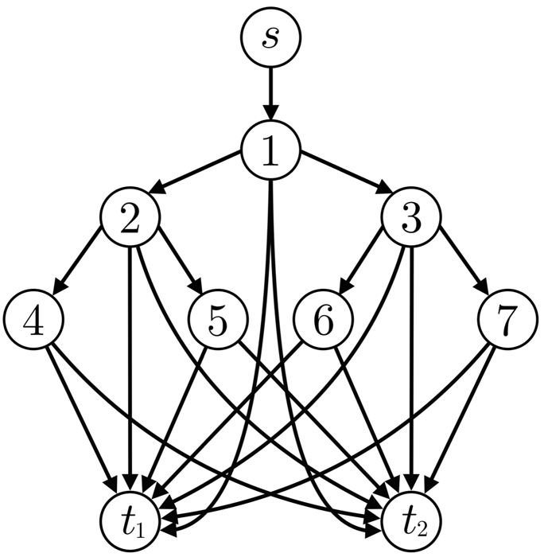
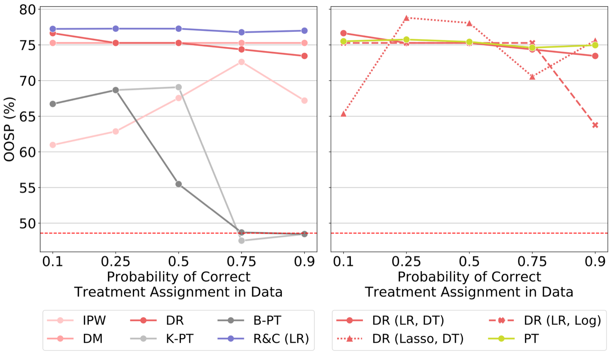
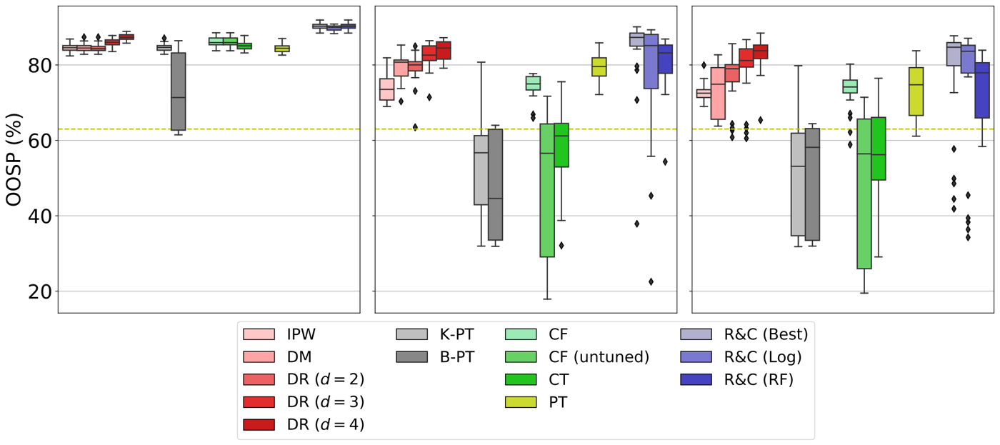
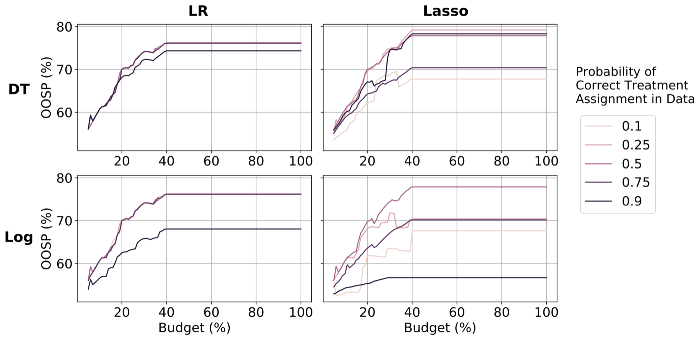

0.600病気の人だけ処置
- 0.9 と見積もる、真の値 0.5 の木論文の例 1 では、葉の中の平均で見積もる従来法（K-PT）が、雑音の特徴量で分岐する木の価値を 0.9 と見積もる。この木の真の値は 0.5 で、真の値 0.6 の最適な木より悪い。
- 漸近的に厳密傾向スコアの推定量（IPW）、結果の回帰の推定量（直接法）、そのどちらか一方（二重頑健法）がほとんど確実に収束すれば、MIO の最適値と最適な木は、母集団での最適値と最適な木の集合に収束する（命題 1〜3）。
- 51%・48% → 80% 弱ワルファリンの投与量のデータで処置の割当てが無作為でない設定では、最適な処置を当てた割合が K-PT で平均 51%、B-PT で 48% だった。提案法の二重頑健法は 80% をやや下回った（深さ 2）。
背景
観察データでは処置を受けた人と受けなかった人が系統的に違うので、反事実の結果は補正して推定する必要がある
目的は個人の共変量 \(x\in\mathcal X\subseteq\mathbb R^F\) を処置の候補 \(k\in\mathcal K\) に対応づける方策 \(\pi\) を、深さ \(d\) 以下の処方的な木の集合 \(\Pi_d\) から選ぶことである。結果 \(Y\) は大きいほど望ましいとし、方策の価値 \(Q(\pi)=\mathbb E[Y(\pi(X))]\) を最大にする。手元にあるのは、過去の方策で処置 \(K_i\) を受けた人の共変量 \(X_i\) と、その処置での結果 \(Y_i=Y_i(K_i)\) だけである。受けなかった処置での結果は観測されない。
論文が想定するのは、ホームレスの人への住宅支援や臓器移植の割当てのような、影響の大きい場面である。こうした場面では、方策を関係者が監査できるよう解釈しやすく、かつ定めたクラスのなかで最適であることが求められる。データは無作為化試験ではなく、ソーシャルワーカーや医師が個人の特徴を見て処置を決めた記録から得られることが多い。
そこで論文は条件付き交換可能性 \(Y(k)\perp K\mid X\) と正値性 \(\mu(k,x)=\mathbb P(K=k\mid X=x)>0\) を仮定し、因果推論の 3 つの推定量で方策の価値を見積もる。傾向スコアの逆数で重みづけする IPW、処置ごとの結果の回帰 \(\hat\nu_k(x)\) で予測する直接法（DM）、両者を組み合わせる二重頑健法（DR）である。DR は次の形をしている。
\[ \color{#1D4ED8}{\hat Q^{\mathrm{DR}}(\pi)=\frac1I\sum_{i=1}^{I}\Bigl[\hat\nu_{\pi(X_i)}(X_i)+\frac{\mathbb 1(\pi(X_i)=K_i)}{\hat\mu(K_i,X_i)}\bigl(Y_i-\hat\nu_{K_i}(X_i)\bigr)\Bigr]} \]
IPW は \(\hat\mu\) が、DM は \(\hat\nu\) が一致推定量なら一致性をもつ。DR は、どちらか一方が収束すれば漸近的に一致する。論文によれば、DR の分散は実際には IPW より小さく、DM より大きいことが多い。
従来法の弱点
葉ごとの平均に頼る従来法は、葉の中で処置が無作為でないと、雑音の特徴量で分岐する木を選ぶことがある
Kallus（2017）の方法（論文では K-PT）は、木の葉 \(n\) ごとに、処置 \(k\) を実際に受けた人の結果の平均 \(\hat Y_n(k)\) で \(\mathbb E[Y(k)\mid X\in\mathcal X_n]\) を見積もり、葉に入る人の割合で重みをつけて足し合わせる。
\[ \color{#C2410C}{\hat Q^{\mathrm{K\text{-}PT}}(\pi)=\sum_{n\in\mathcal L}\frac{\#\{i:X_i\in\mathcal X_n\}}{I}\,\hat Y_n\bigl(\pi(\mathcal X_n)\bigr)} \]
この見積もりが偏らないのは、どの木の各葉でも処置と共変量が独立（\(K\perp X\mid X\in\mathcal X_n\)）なときである。論文はこれを仮定 1 と呼び、K-PT と Bertsimas ら（2019）の方法（B-PT）がともにこの仮定に頼っていると指摘する。B-PT は K-PT の目的に、葉の中の結果のばらつきへの罰則を加えたものである。完全に無作為化された実験なら仮定 1 は自動的に成り立つが、処置の確率が共変量に依存する観察データでは、適度な深さの木ではまず成り立たない。
論文の例 1 は病気かどうかを表す \(X^1\) と、結果にも処置にも関係しない雑音 \(X^2\) の 2 つの二値の共変量をもつ。健康な人の 90% は処置を受けず、病気の人の 90% は処置を受ける。期待される結果は、健康な人が処置なしで 1、処置ありで 0.8、病気の人が処置なしで 0、処置ありで 0.2 である。最適な方策は \(X^1\) で分岐して病気の人だけを処置する深さ 1 の木で、価値は 0.6 である。\(X^2\) で分岐する木は、葉にどの処置を割り当てても価値が 0.5 にとどまる。
ところが K-PT は、\(X^2\) で分岐した葉で処置なしの結果を 0.9 と見積もる。処置を受けなかった人の大半が健康な人だからである。こうして雑音の \(X^2\) で分岐して誰も処置しない木を 0.9 と評価し、0.6 の最適な木より選んでしまう。B-PT は罰則の重み \(\theta\) が十分小さければこの例では最適な木を選ぶ。しかし、すべての結果に \(1-X^2\) を足した例 2 では、\(X^2\) で分岐する木のほうが見積もりの値が高く、ばらつきも小さくなるため、\(\theta\) をどう選んでも B-PT は \(X^2\) で分岐する木を選ぶ。

処置の偏りの強さを変えると、K-PT がどの木を選ぶかも変わる。下の図は例 1 の「健康な人が処置を受けない確率」と「病気の人が処置を受ける確率」をともに \(p\) とし、データが十分に多いときの見積もりを解説者が計算したものである。論文が示しているのは \(p=0.9\) の場合だけである。
逆向きに偏る無作為（0.5）強く偏る
\(X^1\) で分岐（最適）\(X^2\) で分岐（雑音）
真の価値反事実が分かる場合
K-PT葉の中の平均
IPW・DR\(\mu\) が既知の場合
0.500どの割当てでも
0.600病気の人だけ処置
0.600病気の人だけ処置
0.500真の値と一致
K-PT の \(X^2\) の木の見積もりは、処置なしで \(p\)、処置ありで \(0.8(1-p)+0.2p\) になり、大きいほうを選ぶ。\(X^1\) で分岐した葉では処置が \(X^1\) だけで決まるので仮定 1 が成り立ち、見積もりは真の値と一致する。
図2 処置の偏り \(p\) と K-PT が選ぶ木（解説者による計算。設定は論文の例 1 と同じで、\(p=0.9\) が論文の値）。\(p=0.5\) は完全な無作為化にあたる。\(p\) が 0.6 を超えるか 1/3 を下回ると、K-PT は雑音の \(X^2\) で分岐する木を選ぶ。
定式化
推定した価値を葉ごとの重みに変え、強い最適分類木のフローの定式化を処方的な木に広げる
IPW・DM・DR の推定値は、どれも「各データ点にどの処置を割り当てたか」についての和になっている。そのため、処方的な木を学ぶ問題は、重みつきの分類木を学ぶ問題とみなせる。論文は同じグループの強い最適分類木（Aghaei ら）のフローにもとづく MIO を、予測から処方へ広げる。
深さ \(d\) の完全二分木の分岐ノードを \(\mathcal B\)、末端ノードを \(\mathcal T\) とし、根の上に始点 \(s\) を、処置ごとに終点 \(t_k\) を置く。始点以外のすべてのノードから各終点へ辺を張り、すべての辺の容量を 1 にする。共変量 \(x\) をもつデータ点は始点から入り、分岐に従って下り、割り当てられた処置の終点へ流れ出る。変数はノード \(n\) で特徴量 \(f\) をしきい値 \(\theta\) で分岐するかを表す \(b_{nf\theta}\)、ノード \(n\) で処置を割り当てるかを表す \(p_n\)、どの処置かを表す \(w_{nk}\)、そして流れ \(z\) である。


図3 深さ 2 の処方的な木（左）と、それに対応するフローのグラフ（右）。処置が 2 つなので終点は \(t_1,t_2\) の 2 つ（論文 Fig. 4、arXiv v2）。
DR にもとづく定式化の目的関数は次のとおりである。論文はこの式で傾向スコアを \(\mu\) と書いている。
\[ \max\;\sum_{x\in\mathcal X}\sum_{k\in\mathcal K}\sum_{n\in\mathcal B\cup\mathcal T} z_x^{n,t_k}\sum_{i:X_i=x}\Bigl[\hat\nu_k(X_i)+\frac{\mathbb 1[k=K_i]\,(Y_i-\hat\nu_{K_i}(X_i))}{\mu(K_i,X_i)}\Bigr] \]
制約は処置を割り当てていないノードでは必ず分岐すること、流れの保存、分岐の向きに沿ってしか流れないこと、割り当てた処置の終点にしか流れ込めないことを表す。IPW の定式化は括弧の中を \(\mathbb 1[K_i=k]Y_i/\mu(K_i,X_i)\) に、DM の定式化は \(\hat\nu_k(X_i)\) だけに置き換える。制約は 3 つで共通である。
強い最適分類木の定式化はデータ点ごとに流れを決めていた。これに対し、この論文は同じ共変量をもつデータ点をまとめて 1 本の流れ \(z_x\) で扱う。同じ共変量のデータ点は根から終点まで同じ道をたどるので、問題の規模を大きく減らせることが多いという。共変量は有限個の整数値をとると仮定し、連続の特徴量は事前に離散化する。\(w\) と \(z\) の整数性を外しても整数の解が得られる。整数性を外したときの制約と連続変数の数は \(O(2^d|\mathcal K||\mathcal X|)\)、二値変数の数は \(O(2^d|\mathcal F|\max_f|\Theta(f)|)\) で増える。
理論
推定量が一致性をもてば、MIO で選んだ木は標本が増えるにつれて母集団で最適な木に収束する
論文は学習データ \(\mathcal D\) とは独立な大きさ \(N\) の標本で \(\hat\mu^N\)、\(\hat\nu^N\) を学習する設定で、3 つの定式化の漸近的な性質を示す。母集団での最適値を \(v^\star\)、最適な木の集合を \(\mathcal S^\star\) とする。
- 命題 1（IPW）：条件付き交換可能性、潜在的な結果の有界性、\(\mu\) と（\(N\) が十分大きいときの）\(\hat\mu^N\) の正値性を仮定する。\(\hat\mu^N\) が \(\mu\) にほとんど確実に収束すれば、\(I\) と \(N\) が十分大きいとき、MIO の最適値は確率 1 で \(v^\star\) に収束し、最適解の集合は確率 1 で \(\mathcal S^\star\) に含まれる。
- 命題 2（DR）：同じ仮定に加えて \(\hat\mu\)、\(\hat\nu\) の極限が存在して有界なら、\(\hat\mu^N\to\mu\) と \(\hat\nu^N\to\nu\) のどちらか一方が成り立てば同じ結論が得られる。
- 命題 3（DM）：条件付き交換可能性のもとで \(\hat\nu^N\) が \(\nu\) にほとんど確実に収束すれば、同じ結論が得られる。
論文はこれを「漸近的に厳密」と呼ぶ。例 1・例 2 のデータでも、\(\mu\) か \(\nu\) が分かっていて標本が十分多ければ、3 つの定式化で学習した深さ 1 の木は母集団で最適になる。共変量が有限個の値しかとらないので、木の候補 \(\Pi_d\) も有限であり、証明はこの有限性を使っている。
実験
処置の割当てが無作為でないとき、従来法の正答率は大きく落ちたが、二重頑健法は安定していた
評価の指標はテストデータで最適な処置を割り当てた割合（OOSP）である。比較の相手は K-PT と B-PT、policytree（PT、Zhou ら）、causal forest と causal tree（CF・CT）、処置ごとの回帰で最もよい処置を選ぶ regress & compare（R&C）である。B-PT は著者らのコードがないため、K-PT の MIO を B-PT の目的関数に合わせて実装している。計算は 6 CPU、時間制限 4 時間で、MIO は Gurobi 10.0.0 で解いた。
合成データは Athey と Imbens の設定にならい、2 つの標準正規の共変量のうち \(X^1\) だけが処置の効果を決める。各データ点に最適な処置を割り当てる確率 \(p\) を 0.1・0.25・0.5・0.75・0.9 と変え、学習 500 件、テスト 10,000 件の組を 5 つずつ作った。共変量は 10 分位で離散化し、深さ 1 の木を学習した。すべての手法が 9 秒以内に最適に解けている。

DR と DM は \(p\) によらず OOSP 75% 前後を保ち、IPW は 60〜72% で一貫して劣った。結果の真の関数が線形なので、線形回帰を使う DM がよく、DR もその恩恵を受けたと論文は説明している。PT は DR と同じ目的関数を連続の特徴量のまま最適化し、DR とほぼ同じ性能だった。このことから、この例では離散化による損失はほとんどないと論文は述べる。DR の一方の推定量を劣ったモデルにしても、もう一方のよい推定量に支えられて、性能は \(p\) をまたいでおおむね保たれた。
K-PT と B-PT は、無作為の \(p=0.5\) では OOSP 70% 程度だったが、\(p\in\{0.75,0.9\}\) では 50% 前後に落ちた。これは処置を無作為に割り当てた場合と同程度である。観察データの多くは大半の人に正しい処置を割り当てる方策から得られるので、この設定での失敗は特に問題になると論文は述べる。R&C との差、つまり解釈しやすさの代償は、平均で 2 ポイントだった。
ワルファリンの投与量のデータは、国際ワルファリン薬理遺伝学コンソーシアムの公開データにもとづく。公表された用量の式で各患者の最適な用量を求め、3 段階に離散化した。過去の処置の割当ては、完全な無作為と、式の係数を幅 \(r=0.06\)・\(0.11\) で揺らして決める 2 つの設定の 3 通りである。各設定の 5 つの実現値を学習 3,000 件・テスト 1,386 件に 5 回ずつ分け、計 75 組で評価した。年齢・身長・体重は 5 区間に離散化した。

無作為の設定では、IPW・DM・DR はいずれも平均 84.5% だった。無作為でない 2 つの設定では DR が 80% をやや下回り、DM は平均 76%、IPW は 73% と少し劣った。K-PT と B-PT はばらつきが大きく、平均 51% と 48% で、全員に \(K=0\) を割り当てる単純な方策（約 63%）より悪かった。K-PT はすべての問題を最適に解いているので、目的関数そのものが無作為でないデータに向かないと論文は結論づけている。
DR の木を深さ 3・4 にすると、時間制限内に最適性は証明できなかったものの、OOSP は平均 86.0%・87.3% に上がった。提案法の深さ 2 の木は \(10^2\) 秒程度、K-PT は \(10^3\) 秒程度で最適に解けた。深さ 3・4 の DR の最適性ギャップは 20% 未満で、B-PT は 2 次の目的関数のため 150% を超える大きなギャップが残ったと本文は述べる。CF は調整しないと無作為でない設定で K-PT 並みに落ち、ハイパーパラメータを調整すると平均 74% まで上がった。PT は \(r=0.11\) で 73% と DR の 76% を下回った。論文は、連続の特徴量のまま学習した PT の過学習が原因だろうと推測している。
付録の結果の表では B-PT の深さ 2 の最適性ギャップが平均 52.30% となっており、本文の「150% を超える」と食い違う。表の値は 3 つの設定をまとめた平均のようで、深さ 3・4 の DR の OOSP（82.47%・84.78%）も本文の 86.0%・87.3% とは一致しない。このページの本文の数値は論文本文の記述に従った（解説者の注）。
制約の追加
MIO なので、予算や公平性の条件を線形の制約として足せる
流れの変数 \(z\) を数えれば、各処置を割り当てる人数が線形の式で書ける。そのため、深さで決まる木の大きさに加えて、次のような条件を制約として加えられる。再帰的に木を作る PT や CF には、こうした制約は入れられないと論文は述べている。
- 解釈しやすさ：木の大きさを \(M\) までに抑える制約 \(\sum_n p_n\le M\)（\(p_n\) は処置を割り当てるノードを表す。論文はこれを分岐ノードの数の制限と説明している）。
- 予算：処置 \(k\) を割り当てる人を全体の割合 \(C_k\) 以下に抑える。\[ \sum_{n\in\mathcal B\cup\mathcal T}\sum_{x\in\mathcal X}\sum_{i:X_i=x} z_x^{n,t_k}\le|\mathcal I|\,C_k\qquad\forall k\in\mathcal K \]
- 処置の割当ての公平性：保護属性のグループの間で、処置 \(k\) を受ける割合の差を \(\delta\) 以下にする。正当な特徴量で条件づけた制約も書ける。
- 結果の公平性：各グループの推定した結果の平均を \(\gamma_p\) 以上にする。すべてのグループに共通の \(\gamma\) を、実行可能な範囲で最大にすれば max-min の公平性になる。
- 確率的な方策：制約を足すと実行不能になることがある。そのときは \(w\) と \(z\) の整数性を外し、\(w_{nk}\) をノード \(n\) で処置 \(k\) を割り当てる確率と読む。
合成データでは、処置 \(K=1\) を受けられる人の割合を \(C\in[0.05,0.4]\) に制限して DR の木を学習した。制約がなければ約半数が \(K=1\) を必要とするので、予算を絞るほど性能は下がり、制約なしで最大 78% の OOSP が \(C=0.05\) では 57% になった。線形回帰と決定木の組では、どの \(p\) でも性能が揃った。劣った推定量を使うと、無作為でない設定（\(p\neq0.5\)）で性能が下がった。

ワルファリンのデータでは、前節で学習した木がいずれも白人の患者に不利だった。白人と非白人の結果の差の中央値は、無作為の設定で 0.04、無作為でない設定で 0.08 だった。そこで DM で推定した 2 グループの結果の平均の差を \(\delta\in[0.01,0.08]\) 以下にする制約を加えた。\(\delta\) を小さくすると実際の差も小さくなり、無作為の設定で \(\delta=0.01\) とすると差の中央値は約 −0.02、無作為でない設定では \(\delta=0.01\)（\(r=0.06\)）、\(0.02\)（\(r=0.11\)）で差の中央値が 0 になった。ただし、制約は推定値について課すので、有限の標本で実際の差が \(\delta\) 以内に収まる保証はないと論文は注意している。
最適決定木の中での位置づけ
強い最適分類木のフローの定式化を、因果推論の推定量を目的にした処方的な木に移した
- 木の形：二分木で、分岐は 1 つの特徴量としきい値による単変量の分岐。共変量は有限個の整数値をとると仮定し、連続の特徴量は事前に離散化する。木の大きさは最大の深さ \(d\) で決め、処置を割り当てるノードの数の上限も制約で入れられる。
- 目的関数：IPW・直接法・二重頑健法で推定した方策の価値（期待される結果）の最大化。予測の精度ではなく、割り当てた処置の結果を直接評価する。
- 解き方：強い最適分類木のフローにもとづく MIO を、処置ごとの終点をもつグラフに広げ、同じ共変量のデータ点をまとめて扱う。実験は Gurobi 10.0.0 で解いた。
- 最適性の保証：MIO を解き切れば、推定した価値について深さ \(d\) 以下の木のなかで最適になる。推定量が一致性をもてば、標本が増えるにつれて母集団で最適な木に収束する（命題 1〜3）。実験では、ワルファリンのデータの深さ 3・4 は 4 時間で解き切れず、ギャップが残った。
- データ：Athey と Imbens にならった合成データと、ワルファリンの投与量のデータ（3 つの処置）。どちらも反事実の結果が分かるように作ってある。
- 関連する論文：Kallus（2017）とBertsimas ら（2019）は仮定 1 に頼る先行研究として分析し、比較している。Zhou らの policytree は同じ二重頑健な目的を再帰的に最適化する比較相手である。
（解説者の注）分類の最適決定木の研究からみると、この論文の要点は 2 つある。1 つは、処方の問題を「データ点ごとの重みが処置によって変わる分類」に書き換えれば、分類で発展した強い定式化がそのまま使えることである。もう 1 つは、目的関数を偏りを補正した推定値にすれば、仮定 1 のような木の構造への強い仮定がいらなくなることである。一方で、推定値の質は \(\hat\mu\)、\(\hat\nu\) の質に左右され、ワルファリンの公平性の実験では、傾向スコアが極端に小さいデータ点のため DR の推定値が偏ると著者らは述べている。同じ考え方は同じグループの頑健な木や公平な木でも使われている。
BibTeX
このページの数値・式・命題の番号・図は arXiv 2108.13628 v2（2023 年 7 月 24 日）による。Management Science の出版版（2026 年 7 月 30 日オンライン公開）の本文は自動取得できなかったため、照合していない。書誌は Crossref で確認したが、巻・号・ページはまだ登録されていない。出版版での所属は、Jo が USC の Center for Artificial Intelligence in Society、ほかの 3 人がそれに加えて Department of Industrial and Systems Engineering（Vayanos は Department of Computer Science も）と Crossref に記載されている。コードは論文本文には書かれておらず、同じグループの ODTlearn パッケージが処方的な木の実装としてこの論文を挙げている。
@article{jo2026learning,
title = {Learning Optimal Prescriptive Trees from Observational Data},
author = {Jo, Nathanael and Aghaei, Sina and G{\'o}mez, Andr{\'e}s and Vayanos, Phebe},
journal = {Management Science},
year = {2026},
doi = {10.1287/mnsc.2021.02813}
}